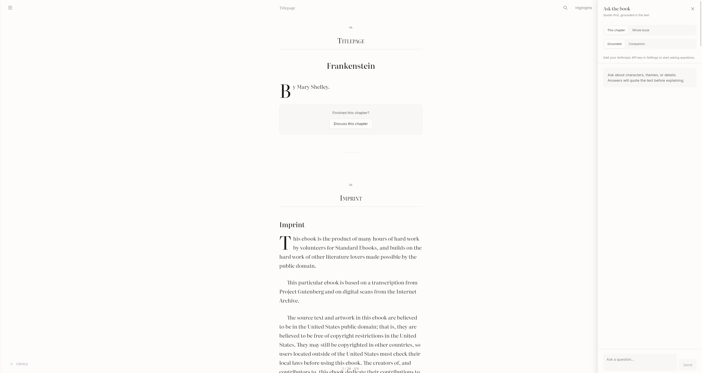
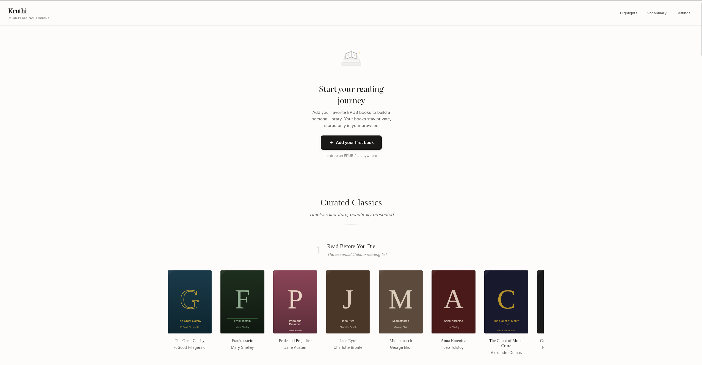

Grounded chat
Responses are tied to source passages with citations and context viewer support.
AI companion for serious reading
Kruthi turns reading into thinking: ask questions, verify claims with citations, and move through difficult books with calm guidance instead of noise.

Experience
Every part of Kruthi is tuned for long-form reading: typography, context-first AI, and workflows for highlights, revision, and completion.
Responses are tied to source passages with citations and context viewer support.
Set per-book goals, track weekly progress, and estimate chapter completion time.
Switch between brief, teacher-style, and exam-mode responses with one click simplify.
A shelf system built around serious reading lists and high-quality public-domain editions.

Trust
Kruthi keeps your books and progress on-device, secures provider keys, and favors citation-backed assistance over speculation.
Install
Choose your platform. Use the latest release links so instructions stay current.
curl -L -o /tmp/kruthi.deb \
https://github.com/bebhuvan/kruthi/releases/latest/download/Kruthi_0.1.0_amd64.deb
sudo apt install -y /tmp/kruthi.debUpdate: run the same two commands again.
Download and run the installer from Latest Release.
Download Windows InstallerDownload the DMG, open it, then drag Kruthi to Applications.
Download macOS DMGNeed all assets, checksums, or web deploy artifact? Use the full release page.
Open latest releaseDownload
Desktop binaries and web artifacts are published on every release.
Kruthi classics are sourced from public-domain providers, with special thanks to Standard Ebooks.